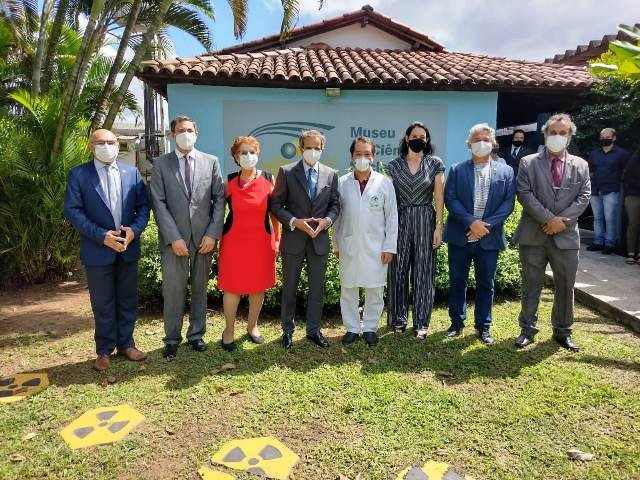
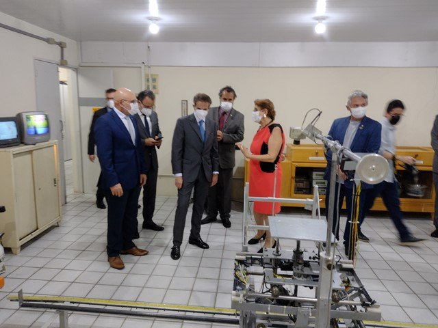
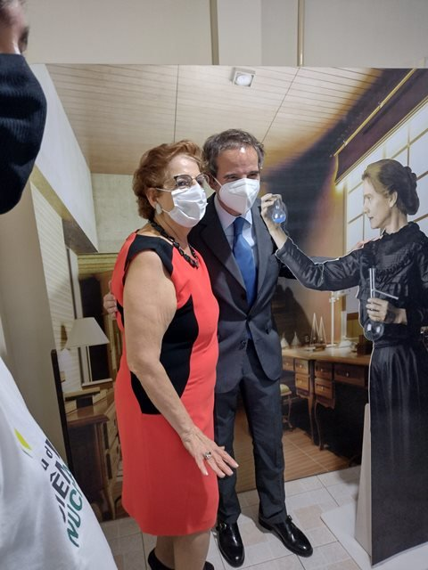
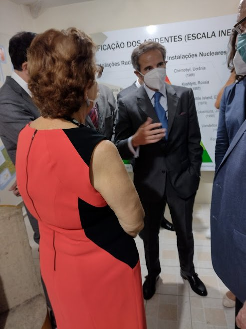

Rafael Mariano Grossi, diretor-geral da IAEA
O diretor-geral da Agência Internacional de Energia Atômica visitou o Museu de Ciências Nucleares e os laboratórios do grupo. Foi recepcionado pela professora Helen Khoury, coordenadora-geral do Museu.
- Reitor da UFPE
- Alfredo Gomes
- Vice-reitor da UFPE
- Moacyr Araújo
- Embaixador do Brasil em Viena
- Carlos Duarte
- Diretor do CRCN-NE
- Carlos Alberto Brayner
Representantes da Marinha e outros convidados completaram o grupo.




Presidência e diretores da CNEN
O presidente e diretores de vários institutos da Comissão Nacional de Energia Nuclear visitaram o Museu de Ciências Nucleares e foram recebidos pela professora Helen Khoury, coordenadora-geral do Museu.
As 8 fotos desta visita estão vazias (0 bytes) na cópia do site antigo; é preciso recuperá-las com a equipe.